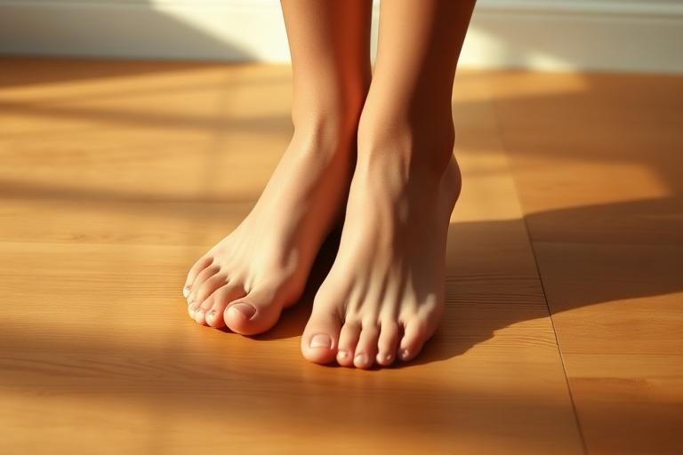

Mary Ceraulo — Chinesiologa e istruttrice di Pilates
Il mio obiettivo? Accompagnarti a ritrovare nel movimento un percorso sicuro, se convivi con una diastasi, problemi di circolazione alle gambe o dolori legati alla postura.
Ciao, sono Mary. Ti aiuto a ritrovare equilibrio, forza e benessere attraverso il movimento consapevole.
La mia attenzione verso questi ambiti preclinici è nata da esperienze personali e situazioni incontrate nella vita quotidiana che nel tempo hanno orientato il mio percorso professionale. Non parto da protocolli standard — parto da te.
- 01Ascolto attivo prima di qualsiasi esercizio
- 02Approccio preclinico, non medico
- 03Percorsi su misura, progressivi e sostenibili
- 04Guide gratuite per chi vuole iniziare in autonomia
Di cosa mi occupo,
concretamente
Diastasi addominale
Un percorso progressivo per ritrovare forza al centro, in sicurezza e senza forzature.
Circolazione e gambe
Movimento mirato per supportare il ritorno venoso e ridurre il gonfiore quotidiano.
Dolore posturale
Analisi del gesto, consapevolezza corporea e strategie pratiche per stare meglio.
Guida al Benessere
Vedi tutta l'area newsLavorare in smart-working senza rovinarsi la schiena
5 esercizi fondamentali da fare ogni ora davanti al computer per prevenire la lombalgia.

Perché la propriocezione è la chiave della tua forza
Capire come il cervello percepisce il corpo nello spazio cambia il modo in cui ti muovi.
La routine mattutina per sbloccare le articolazioni
Bastano 10 minuti al giorno per cambiare la tua postura e iniziare la giornata allineati.
Inizia il tuo percorso a Roma o Online
Disponibile per appuntamenti privati nel cuore di Roma o consulenze video personalizzate ovunque tu sia. La distanza non è un limite per il tuo benessere.
Studio Roma
Via Giovanni da Empoli, 3 00154
Online
Consulenze via WhatsApp / Google Meet